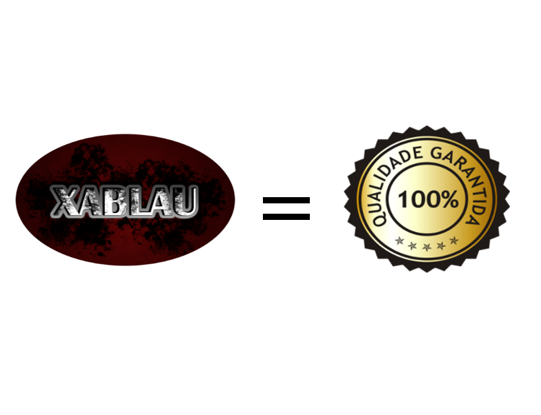

A Equipe Xablau é uma recente organização que não possui fins lucrativos. Apesar de estar a poucos meses no mercado, já possui fortes projetos que foram e estão sendo desenvolvidos. A equipe Xablau é especializada em desenvolvimento de plataformas para WEB, como por exemplo redes sociais e apps. Desenvolvendo com PHP e Html, entrega produtos com qualidade internacional.

Atualmente a Equipe Xablau está comprometida com o desenvolimento da rede social INTERPLINE. Para saber mais sobre a INTERPLINE entre em contato conosco.